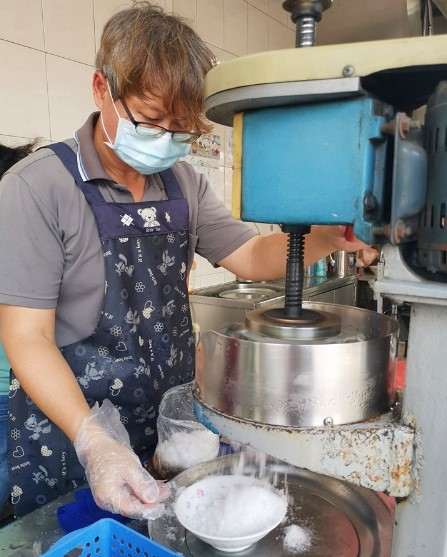
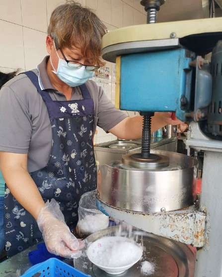

| 台南冰店 |
在地人從小吃到大，一碗只要銅板價$40，這裡的配料多樣，全部配料有仙草、杏仁、湯圓、芋頭、紅豆、綠豆、愛玉...等等，老顧客都點"全加"，這樣子的吃法口感比較豐富，糖水清香清香的，整體微甜吃完不會膩，解渴又清涼，圓仔很好吃~
 

| 店家名稱：長和路圓仔冰
地址：台南市安南區長和路三段3號 電話：06-3561123 營業時間：10:00–18:00 |
說到台南人關於飲食的集體記憶，「江水號」肯定是常掛在嘴上嚷嚷、三不五時得來上一碗的日常。靠著每日手工熬煮的配料，「江水號」的八寶冰走過 90 個年頭，征服一代代嗜甜嗜美食的台南人，即使在凡事講求快速，味道求新求變的新世代，這一碗單純實在、清甜不膩的透心涼，依然能在冰品爭霸戰中勝出，滿足年輕人挑剔的味蕾。
| 店家名稱：江水號
地址：台南市中西區國華街三段27號（臨時店面） 電話： 06-2258494 營業時間：12:00~20:00，不定期公休 |
| ☝️top |